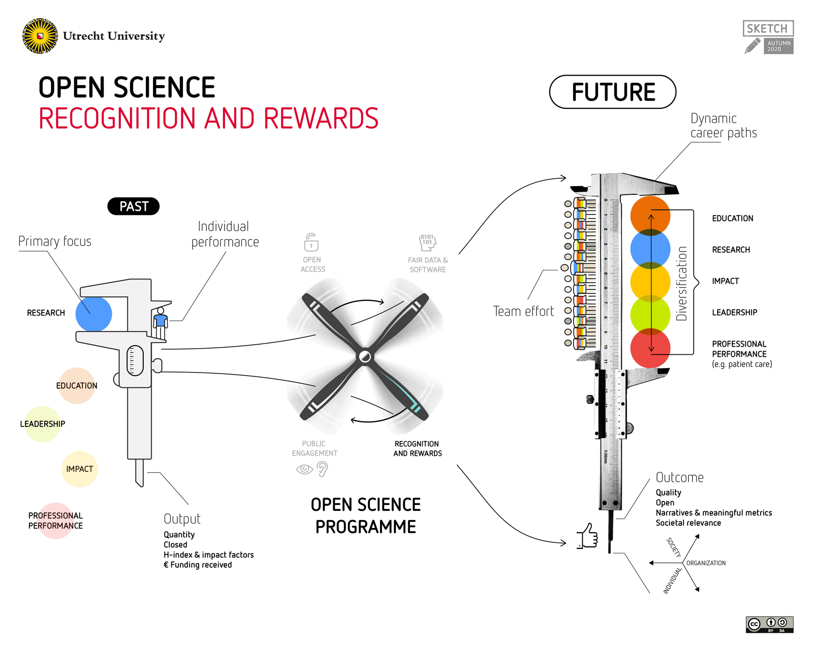
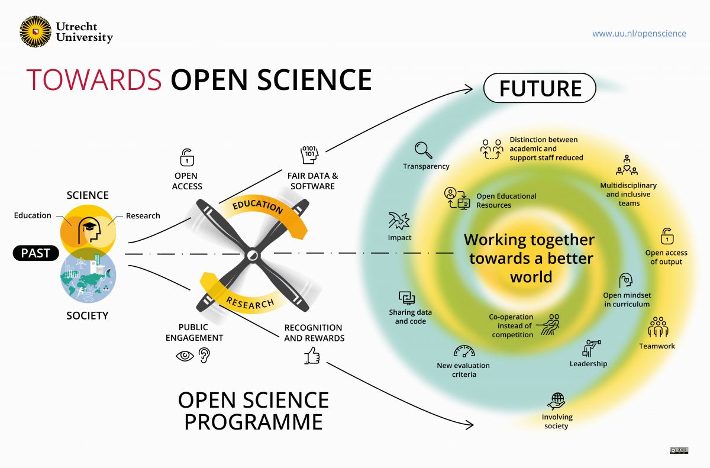

Publications
Il s’agit ici de présenter, en tant qu’enseignant-chercheur, quelles sont mes perspectives de publication. Il s’agit ici également de proposer, par delà les indicateurs, un éclairage narratif plus particulièrement focalisé sur ma démarche de recherche et ce qu’elle engendre vis-à-vis de mes perspectives de publications.
Revues cibles
ll convient également de préciser ici que, pour ma part, j’essaie depuis plusieurs années d’éviter le plus possible de publier dans des revues du type MDPI ou Frontiers pour des questions d’économie des coûts publics [@FraisPublicationNous2023], mais également vis-à-vis de potentielles pratiques discutables (voir à ce titre les interrogations des sites Predatory Publishing et Predatory Reports ainsi que le site francophone d’Hervé Maisonneuve Revues et Intégrité). En effet, je suis sensible aux problèmes des pratiques de publications discutables et de l’environnement parfois étrange du système de publication scientifique [@brembsReplacingAcademicJournals2023a]1. Pour plus de précisions, car ce n’est pas ici l’objet de cette partie, il est intéressant de lire le billet de blog d’Eiko Fried intitulé “Academia: trapped in the upside down of publishing” et différents liens que j’ai pu indiquer dans ce tweet. On recommandera également les excellentes vidéos humoristiques du Dr. Glaucomflecken que je montre aux étudiants dans le cours de méthodologie de la recherche de première année de Master (voir chapitre concernant mes activités pédagogiques) : Academic Journals Doing Crime ; Academic Publishing ; Nature Needs a Reviewer & Editors Quit Academic Publishing Company.
Bien évidemment, il ne s’agit pas de jeter l’opprobre sur des revues et/ou des collègues, dans la mesure où 1) je suis également concerné par la publication dans ce type de revues2 et 2) il y a d’excellents articles (que je cite) publiés dans ces revues. A nouveau, il ne s’agit pas d’avoir un regard “clivant”, mais d’accéder à de la nuance et surtout de penser à long terme. Comme pour la question de la “science ouverte”, il convient de contribuer à implémenter de meilleures pratiques avec bienveillance. Ces dernières, pour ma part, se doivent donc d’être incarnées tant par la capacité à influencer et d’évoluer petit à petit le plus possible vers des pratiques de publications (et de reviewing) plus responsables pour l’ensemble de notre communauté scientifique. De manière plus globale, le système de publication scientifique est, je l’espère, amené à évoluer dans la mesure où il ne semble plus tenable. Parmi les propositions, l’idée d’une plateforme gérée par la communauté fait de plus en plus sens [@brembsReplacingAcademicJournals2023a]3.
Activité de reviewing
Concernant l’activité de reviewing des travaux scientifiques, cette dernière me semble extrêmement importante et nécessite un investissement important en termes de temps qui n’est pas nécessairement visible pour notre communauté. J’ai récemment décidé, à l’exemple d’autres collègues, de signer des mes review pour des raisons de transparence et de responsabilité et de valoriser cette activité sur ORCID. Une reconnaissance importante pour moi est celle donnée par les auteurs en retour des commentaires que l’on peut faire dans un esprit bienveillant et, si possible, d’amélioration des travaux qui nous sont soumis. Parmi les remerciements deux m’ont fait plaisir au regard de la qualité de reviewing que j’ai essayé de donner vis-à-vis des travaux soumis à mon évaluation. Le premier est en anglais et reste dans les échanges du reviewing : “We thank the reviewer for constructive and thorough comments which have aided in improving our manuscript.” Si ce commentaire pourrait ressembler à un commentaire général de politesse, il faut le mettre en regard à un reviewing de 3 pages d’un article qui était déjà de grande qualité et qui a permis, je le crois, d’améliorer le manuscrit final dans une revue internationale ayant un facteur d’impact supérieur à 7. Le second est en français et a été inclus dans la section “remerciements” publiée de l’article : “Les auteurs expriment leur reconnaissance à toutes les personnes sans lesquelles cette étude n’aurait pas été possible : […] Ils expriment également leur gratitude à un membre anonyme du comité de lecture de l’European Review of Applied Psychology, dont les critiques constructives et les recommandations leur ont permis d’améliorer leur manuscrit.”
Appliquer les principes de science ouverte
Toujours en lien avec l’évolution vers de meilleures pratiques de publications, un de mes objectifs depuis plusieurs années consiste à publier en accord avec les principes de la “science ouverte”. Cela signifie de tendre vers une plus grande transparence et reproductibilité [@vanlissaWORCSWorkflowOpen2021; @nosekReplicabilityRobustnessReproducibility2022] de mes travaux et de ceux auxquels je participe. Les principaux outils que j’utilise sont R, Rstudio, GitHub et OSF dans une démarche dite de reproductibilité computationnelle.
En regard de cette démarche, quatre aspects sont importants pour moi. Le premier relève du fait de prendre le temps d’améliorer chaque jour un peu plus une démarche de science ouverte, transparente et reproductible dans mes productions scientifiques (“slowpen science”, @stoevenbeltRewardPhDsHighquality2019) malgré le fait que cela puisse être considéré comme une forme de désavantage dans le système académique actuel. Il s’agit, là encore, d’investir et d’incarner des pratiques qui, à long terme, seront des normes au bénéfice de notre communauté scientifique [@SupportEuropeBold2022a; @leisingTenStepsBetter2022; @cristeaCommentPsychologieAborde2022; @kowalczykWhatSeniorAcademics2022a]. Cela permet également un bénéfice au plan individuel avec un travail d’une plus grande reproductibilité facilitant ainsi la collaboration (incluant “le futur soi”) et ce avec une plus grande efficience sur “l’économie du temps” (pour une illustration, voir la figure 1 de @lowndesOurPathBetter2017).
Une science qui peut se corriger
A cela s’ajoute le fait de pouvoir être responsable de ses productions aussi du point de vue des erreurs comme j’ai pu le rencontrer. Le manque de transparence rend impossible la détection de cette typologie de problème et peut conduire tant à des difficultés de reproductibilité et de réplicabilité (et donc de solidité des résultats scientifiques) que de production d’attentes irréalistes vis-à-vis de la communauté scientifique. Sur ce dernier point, deux citations du chercheur Eiko Fried me paraissent extrêmement pertinentes :
“We all grew up in a research culture where successes are communicated, and we pimp our CVs, but we don’t really talk about failures. This is a pretty horrible climate for young researchers to grow up in: Everything always shines and is perfect, things go well for everybody, and if you make a mistake, you think you’re the only one ever, and that you’re a failure. So I wanted to suggest to also share things that didn’t work out, and I’ll start today with my failure of the week: Someone found a small coding error I made in a paper published in 2017, and notified me about it yesterday. I will issue a correction, it doesn’t impact on the results a lot, so it’s not the end of the world, but of course that’s not a pleasant experience. “ Eiko Fried, billet de blog @friedFailureWeek2018.
“I think we also need a better culture around mistakes: it’s okay to make those, and we should talk about them more. You shouldn’t be proud to make mistakes, but you should be proud if you can correct the scientific record. This includes, if necessary, retracting your work. I published a correction a few years ago, based on a statistical mistake I made. Oddly enough, I had to fight the journal editor for two years to publish the correction, I suspect because corrections don’t look good for journals.” Eiko Fried, interview dans le cadre de la mise en œuvre d’un cours sur l’intégrité scientifique à l’université de Leiden [@RethinkingResponsibleScholarship2023].
Principe d’humilité
Un second point reste l’humilité relative à nos recherches4 sur ce qu’elle permette de faire comme inférences qui sont parfois “prescriptives” du point de vue des pratiques. Les dégrée de liberté des chercheurs, les problèmes de mesures, les modélisations incitent à beaucoup de prudence et de bienveillance quant à la capacité de nos résultats a avoir une action efficace sur les problèmes que l’on cherche à définir et à affronter [@rohrerThinkingClearlyCorrelations2018]. Cela ne signifie pas qu’il ne faille pas faire de recherche, au contraire, elle constitue à mon sens l’outil le moins imparfait pour tenter d’appréhender ce qui nous entoure. Il s’agit là encore de progresser et d’accéder à une forme “d’ambivalence” que m’évoque souvent ces deux citations : “Tous les modèles sont faux, mais certains sont utiles” de George Box5 et le titre d’un chapitre de Paul Smaldino “Models are stupid, and we need more of them” [@smaldinoModelsAreStupid2017]. Cette approche retrouve, à l’évidence, le concept de vérisimilitude utilisé en épistémologie.
Promouvoir la diversité des acteurs et des parcours
Un troisième point concerne le respect de la juste promotion et valorisation des différents acteurs de la production scientifique, ce qui peut s’avérer une tâche difficile compte-tenu des différents rôles et positions pouvant exister dans le milieu académique. Par ailleurs, cette juste reconnaissance est parfois prise dans des enjeux de pouvoir existant dans le milieu académique et il convient d’être vigilant à protéger et aider les personnes qui se retrouvent dans des positions de faiblesse ou minoritaires afin d’y promouvoir une plus grande diversité et justice [@elsherifBridgingNeurodiversityOpen2022 ; @azevedoNavigatingAcademiaNeurodivergent2022]. Il ne s’agit pas, ici, de prôner une attitude prescriptive ou une volonté de légiférer n’étant un spécialiste de recherche en politiques publiques sur ce point particulier mais tout du moins d’être sensible à ce type de questions.
“Furthermore, the hidden curriculum (Parsons et al., 2022) and current academic infrastructure focused on metrics and closed scientific systems perpetuate global inequalities and stereotypes reinforcing hierarchies that silence marginalised voices and reinforce their subordination. This justification is further perpetuated by science being misused as a weapon to socially oppress minoritised voices by clinging to the assumption that scientific practice is rational, impartial, and objective, when in fact it is not (e.g. Eagly et al., 2012). In turn, these so-called ‘facts’ are used to justify the claim that under-represented minorities are unable to ascend to positions of power, thus limiting their freedom, opportunities to succeed, and opportunities to participate equally in society.” @elsherifBridgingNeurodiversityOpen2022
Incarner de meilleures pratiques
A nouveau, il s’agit de faire oeuvre de bienveillance et d’implémenter concrètement de meilleures pratiques au fur et à mesure en utilisant les principes de la science ouverte, mais aussi en utilisant le système CRediT [@allenPublishingCreditWhere2014] de manière plus systématisée (je me dois également de progresser au-delà de la simple traçabilité du déroulement d’un travail de recherche et d’un manuscrit à l’aide de Rstudio et Github). Concernant l’incarnation de meilleures pratiques, à titre d’illustration, je suis actif sur OSF et GitHub depuis 2018 où j’essaie le plus systématiquement possible de mettre à disposition pour mes publications (articles, chapitre d’ouvrages, communications orales et affichées), les scripts R d’analyses des données, le matériel (questionnaires, figures et tableaux) et les données simulées (qui permettent de reproduire les données et leurs relations sans partager le jeu de données réel. Cela permet de lever des problématiques de sécurité des données6 tout en mettant à disposition un jeu de données avec les mêmes variables afin de reproduire les analyses avec les scripts également mis à disposition). Un dernier point concernant les meilleures pratiques qu’il me faut encore développer concerne les pratiques de pré-enregistrement d’études [@nosekPreregistrationRevolution2018].
Avec cela s’accompagne également pour moi la revalorisation de la catégorie remerciements dans les articles. En effet, je pense important de valoriser l’activité qui consiste à aider et aiguiller d’autres collègues dans leurs recherches, incluant même la relecture d’un manuscrit sans nécessairement que cela implique une position de co-auteur. Je suis également heureux d’avoir pu incarner cette position7.
Pour une meilleure évaluation de la recherche
Enfin, ces différents indicateurs bibliométriques en tant que mesure imparfaite de l’activité de recherche8 ne doivent pas prendre le pas sur l’évaluation qualitative de ces activités et du rapport qu’elles entretiennent avec la communauté scientifique et la société ainsi que l’investissement concret vers une science plus ouverte, transparente et reproductible [@knechtReshapingAcademicSelf2021].

Sciences et société, pluridisciplinarité
A ce titre une expérience très formatrice pour moi a été mon rôle actif au sein du Collège Scientifique (CS) de l’Observatoire National de la Vie Etudiante (OVE). Cette institution dépend du Ministère de l’Enseignement Supérieur et de la Recherche (MESR) et est rattachée opérationnellement au Conseil National des Œuvres Universitaires et Scolaires (CNOUS). L’OVE est une structure très intéressante dans la mesure où son conseil d’administration est composé de scientifiques (CS), mais aussi de représentants des organisations étudiantes nationales représentatives (“usagers”), des représentants des mutuelles étudiantes, des représentants de l’Association des Villes Universitaires de France (AFUV), de France Université (anciennement Conférence des Présidents d’Université-CPU) et de l’Association des Université Européenne (EUA). L’OVE a une mission importante qui suppose l’implication d’acteurs multiples et divers vers un but commun d’amélioration des conditions de vie étudiante. Cela illustre son implication sociétale qui dépasse l’objectif d’éclairage des politiques publiques.
Un autre aspect intéressant réside dans la collaboration avec des chercheurs de diverses disciplines telles que l’économie, la géographie, la démographie, la sociologie, les statistiques et la psychologie. En ce sens les standards de publications (et de promotion) peuvent varier selon les disciplines et la culture dominante de l’OVE reste la publication dans des ouvrages en français au détriment de la publication internationale dans des revues à comité de lecture. Il ne s’agit pas ici de critiquer cet état de fait, mais au contraire de reconnaître aussi cette pluralité dans l’expression de la valorisation scientifique. Un des enjeux devient alors de trouver les solutions qui permettent de répondre le plus largement possible aux besoins. A nouveau, la science ouverte et l’organisation du travail qu’elle permet constituent pour ma part une réponse à ces enjeux de diffusion et de valorisation scientifique des travaux de l’OVE9.
